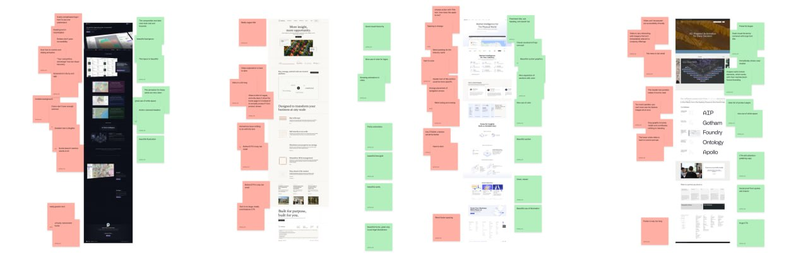
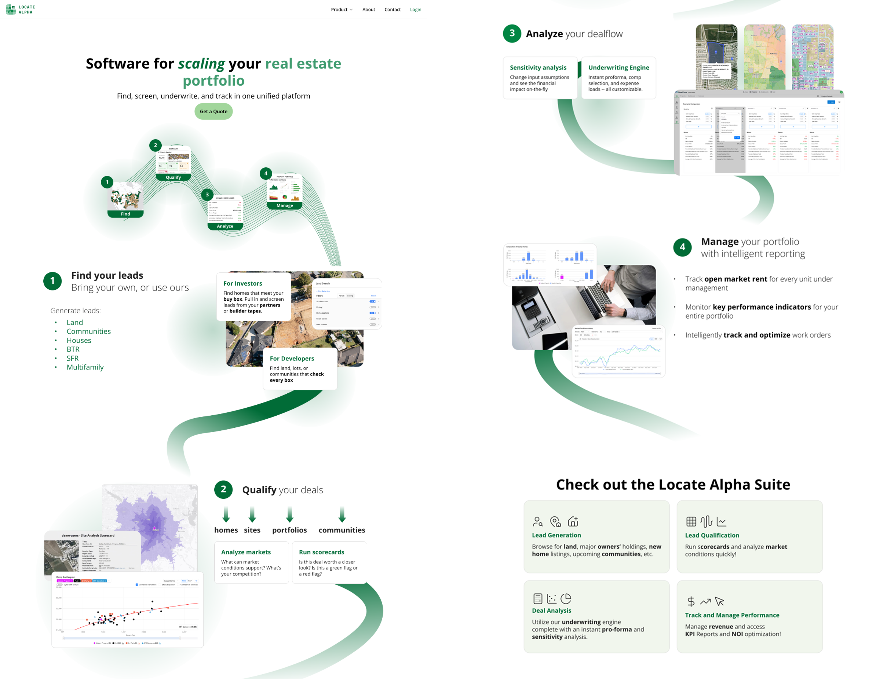
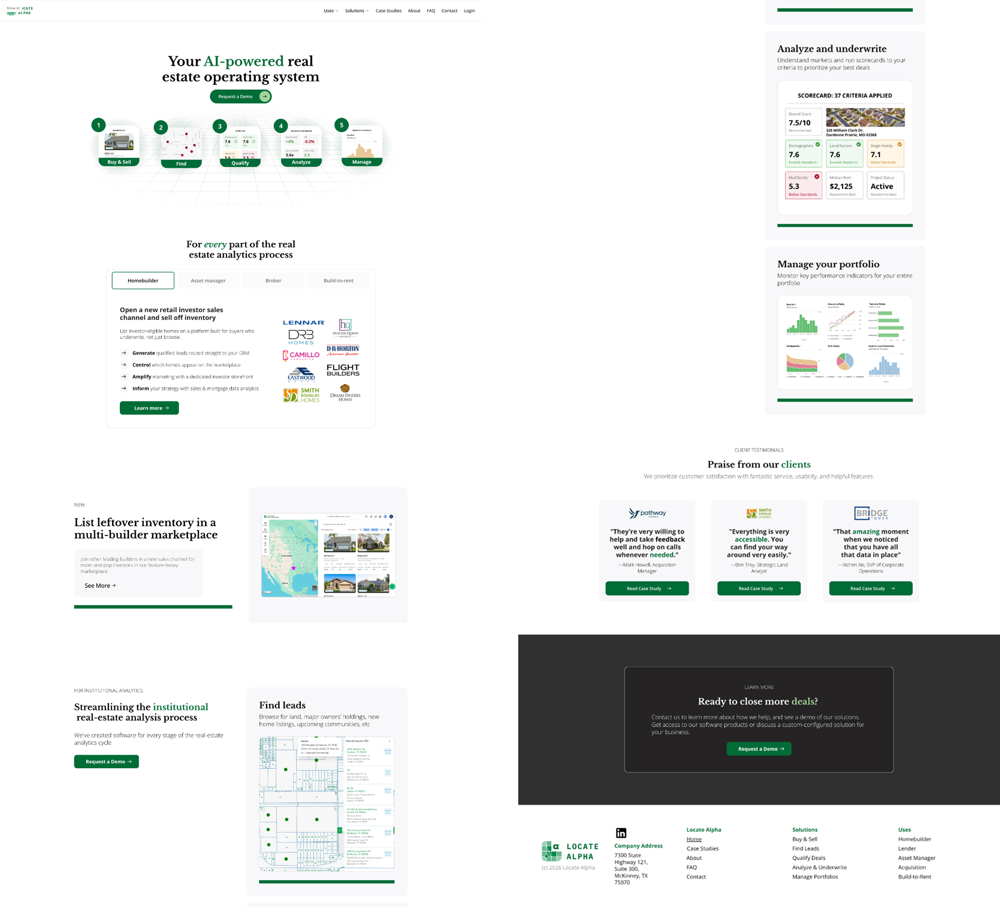

Locate Alpha Corporate Website
Generating leads and pulling in over a thousand visitors each month — a full website and brand system redesign for a growing real estate analytics company.

Overview
Turning a Forgotten Website into a Growth Engine
I was tasked with transforming a 5-year-old, incomplete site into a sleek catalyst for growth.
The Challenge: A growing real estate software analytics company needed to rebrand their outdated website that was confusing potential clients, discouraging investors, and misrepresenting their evolved business model.
The Impact: The redesign now attracts 1,100+ visitors each month, eliminated client confusion, increased professional credibility, and established a cohesive brand system used across all marketing materials.

Research
Analyzing Websites from Successful Companies
I analyzed 63 successful real estate companies and software startups, discovering a key design tension:
- Software startups favored sleek, innovative aesthetics
- Real estate firms preferred traditional, prestigious designs
This insight became crucial for balancing diverging design styles and positioning Locate Alpha at the intersection of both worlds.

Pain Points
Identifying User Frictions that Cost Opportunities
Working within corporate constraints, I collaborated with the sales team to identify common user frustrations that were costing the company real opportunities:
Unclear Messaging
Contradictory wording led to lost deals as potential clients couldn't understand what the product actually did.
Missing CTA
Visitors were not encouraged to contact sales — the site had no clear conversion path.
Ugly Interface
Investors were openly "embarrassed" of the site, undermining the company's credibility in sales conversations.
Information Leak
Competitors posed as prospects to copy company information — full product screenshots were publicly visible.
Grayscales & Wireframes
Generating Unique Layouts
Successful landing pages had intuitive layouts that balanced user expectations with unique graphics. I planned space for branding assets within each layout while deliberately avoiding AI-generated site patterns that give pages a cheap, generic appearance.

First Iteration
Compiling Information in a Sleeker Design
This design helped the team settle on what information to prioritize. It surfaced both wins and remaining problems:
Clear CTA
Multiple buttons led to the contact page, giving visitors a clear path to reach the sales team.
Cleaner Interface
Colors and fonts provided visual hierarchy, creating a more professional and scannable layout.
Unclear Messaging
Flashy catchphrases still didn't clearly explain the company's core offerings to new visitors.
Information Leak
Full product screenshots still exposed the company UI to competitors posing as prospects.

Final Iteration
Optimizing for User Skimmability
I readjusted the layout to be easier to scan and added an FAQ page, more product pages, and solution pages. This time, I focused on revamping content to be user-specific — even when one product appealed to multiple user types.
Immediate Funnel for Users
Visitors can identify with clear user groups and jump directly to pages with information specific to their goals.
Credible, Not AI-Generic Language
Real estate–specific terminology shows that we know what we are talking about, building trust with informed buyers.

Results
Solving Complaints and Attracting New Clients
Quantitative Outcomes
- Zero complaints about website confusion (previously a regular issue)
- 11 qualified leads generated through contact form in the first month post-launch
- 363 unique visitors in the first month post-launch
- 100% reduction in irrelevant inquiries
Qualitative Feedback
- An investor specifically complimented the professional design
- Sales team proudly incorporates the website link into prospective client emails
- Users began using the website as a login shortcut to company software
- Design system successfully applied across all marketing materials
Reflection
Adapting Design Research to Corporate Reality
Prioritizing Simplicity over Uniqueness
While creating my third iteration, I examined Hotjar recordings and Framer analytics and realized that the beautiful graphics of our website were not helping visitors answer the core question: "Is this a legitimate product?" I removed decorative linework and adopted a simpler, easier-to-skim style — especially important since many users spent less than a minute on the home page.
Adapting Research Methods for Limited Resources
Unlike my courses in college, there was limited access to direct user feedback in this fast-paced startup environment. Instead of traditional user interview methodology, I gathered stakeholder insights and implemented post-launch analytics. Sometimes "no complaints" is the best success metric when transitioning from an underdeveloped baseline.
Balancing Perfectionism with Iteration Speed
I wanted to prove myself by creating as many polished, high-fidelity designs as possible. But my perfectionism bogged down the process. Six roughly designed options easily triumphs three pixel-perfect ones — the final result was usually a mish-mash of multiple designs anyway. In the future, I will prioritize rapid iteration and collaborative refinement over individual perfection.
Content Strategy in the AI Era
Despite available AI tools, authentic and clear copywriting remained the most critical factor for user comprehension and trust. I spent too much time on aesthetics. Focused content strategy delivered more value than purely visual improvements.
Integration into Branding
While the company needed more consistent branding, creating an entirely new design style risked exacerbating the problem. To avoid this, I renovated older materials while also making new assets easier for other employees to use — through email and PowerPoint templates, and one-pagers and webpages for every product and use case. Making branding consistent was now as easy as attaching a file or pasting a link.
What's Next
Continuing to Adapt to Our Target Users
This project established a foundation for the company's continued growth and professional positioning. The design system continues to guide marketing efforts, and the analytics implementation provides ongoing insights for future optimizations.
- A/B testing key conversion elements
- User journey mapping for enterprise sales processes
- Advanced personalization for different user segments
This project taught me the importance of balancing user needs, business constraints, and stakeholder feedback in a real-world corporate environment. Great design isn't just about beautiful interfaces — it's about solving actual business problems through thoughtful design decisions.